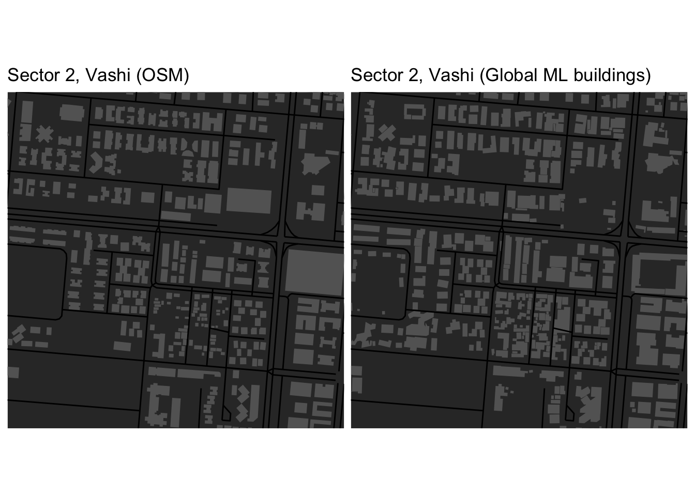
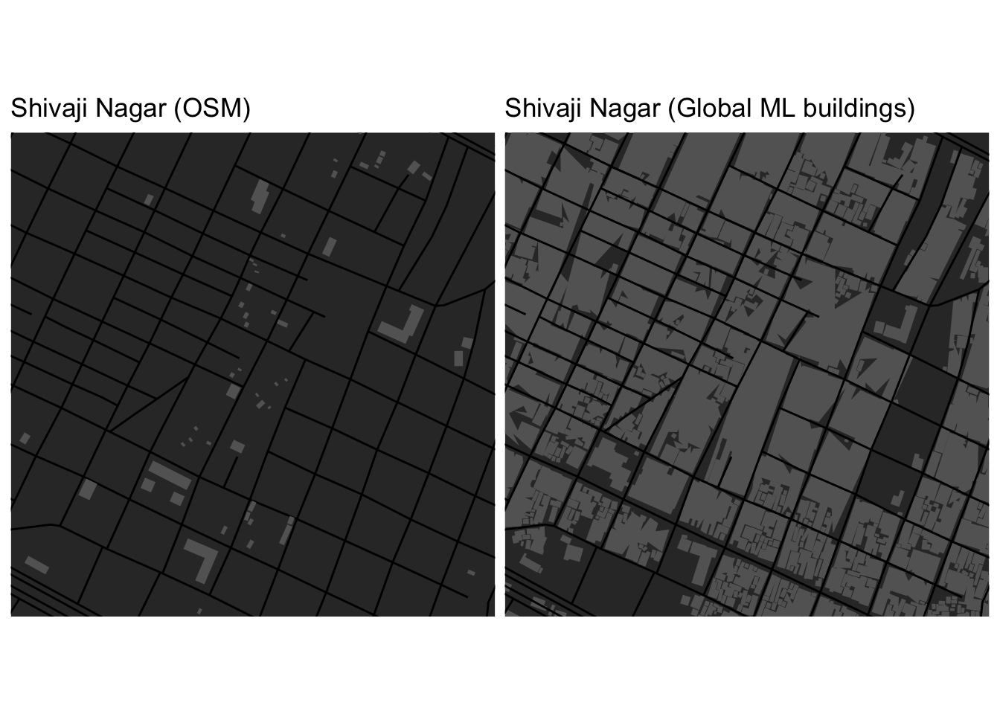

Building footprints for Mumbai
I rely heavily on Openstreetmap (OSM) for my geospatial analyses as I mainly work with vector data of buildings and streets. However, OSM is not always reliable - with particularly large issues for cities in developing countries like Mumbai. From my recent investigations, OSM seems especially bad for building footprints in areas with informal settlements or changes within the last few years. To learn more, I’ve compared OSM with a recent dataset called GlobalML from Microsoft [1]. Instructions on downloading data from Global ML can be found in another blog post.
I first started with comparing OSM and Google maps streetviews centered around the area I grew up in (Sector 2, Vashi). I could quickly see that many buildings were missing in the footprints data. Global ML corroborates this especially for areas with many small building footprints - likely informal settlements.

The situation is worse for known vast informal settlement areas like Shivaji Nagar in Eastern Mumbai suburban district. Here, OSM has not captured any building footprints but the whole area is densely built up! What’s even more fascinating is that this area has been built up for quite some time [2]. It would seem that OSM built environment polygons are not regularly maintained for Mumbai?
